Analiza mediului extern
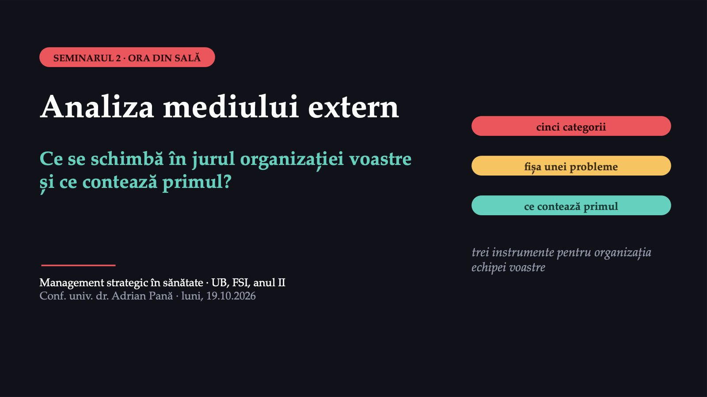
1 / 29Acesta este al doilea dintre cele șapte seminarii și primul al cărui produs se notează. Azi învățați trei instrumente pe care le folosiți apoi pentru organizația echipei voastre: cele cinci categorii de schimbare, fișa unei probleme externe și ordonarea problemelor după cât de mult contează și cât de probabil este să continue.
Ce faceți azi și ce predați la sfârșit
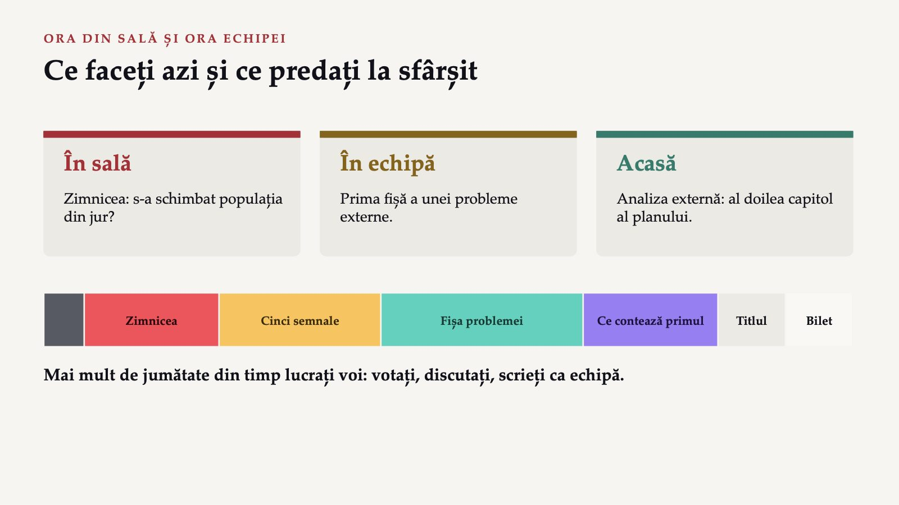
2 / 29Seminarul are două ore: o oră în sală, cu toată grupa, și o oră de lucru al echipei, pe care o puteți face acasă. În sală vă întoarceți la spitalul din primul seminar și răspundeți la întrebarea lăsată atunci deschisă: s-a schimbat populația din jurul lui? Mai mult de jumătate din timp lucrați voi: votați, discutați cu colegul de bancă și scrieți, ca echipă, prima fișă a unei probleme externe. În ora echipei scrieți analiza externă a organizației voastre, al doilea capitol al planului strategic.
46,6%
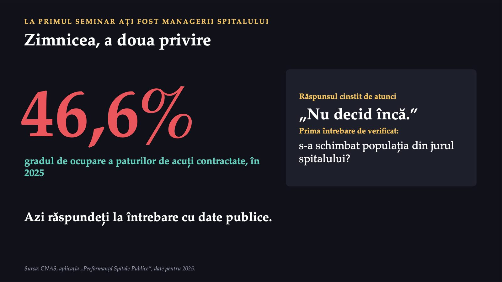
3 / 29La primul seminar ați fost, pentru câteva minute, managerii Spitalului Orășenesc Zimnicea, un spital mic din județul Teleorman. Ați aflat o singură cifră: în 2025, paturile lui de acuți contractate cu casa de asigurări au avut un grad de ocupare de 46,6%. Răspunsul cinstit a fost atunci „nu decid încă”, iar prima întrebare de verificat a fost: s-a schimbat populația din jurul spitalului? Azi îi răspundeți cu date publice.
Cum s-a schimbat, în ultimii zece ani, populația județului Teleorman?
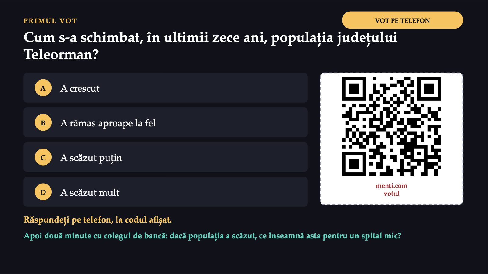
4 / 29Votați pe telefon, prin codul de pe ecran: cum credeți că s-a schimbat, în ultimii zece ani, populația județului Teleorman? A crescut, a rămas aproape la fel, a scăzut puțin sau a scăzut mult? Apoi discutați două minute cu colegul de bancă: dacă populația a scăzut, ce înseamnă asta pentru un spital mic? Distribuția voturilor apare pe ecran înainte de date.
Răspunsul apare după ședință
Răspunsul apare după ședință
Mai puțini și mai vârstnici, dar nu mai repede decât țara
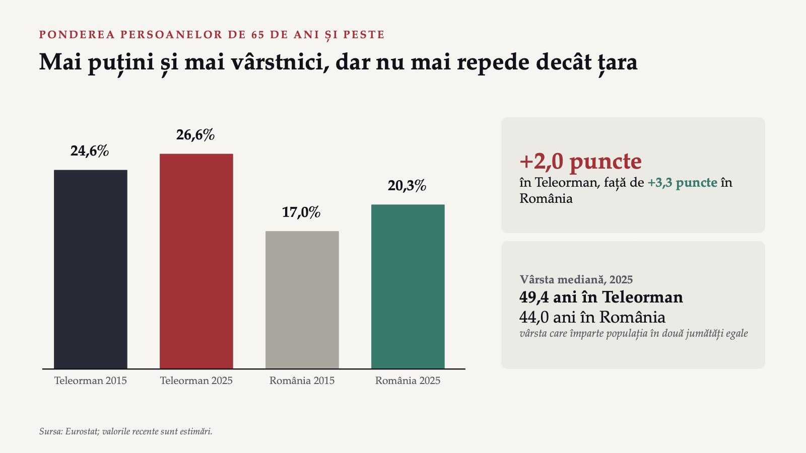
6 / 29Populația a scăzut și, în același timp, a îmbătrânit. Ponderea persoanelor de 65 de ani și peste a crescut de la 24,6% în 2015 la 26,6% în 2025, mult peste media țării, de 20,3% în același an. În Teleorman, mai mult de un locuitor din patru are 65 de ani sau peste. Ponderea a crescut însă mai încet decât în țară: cu 2,0 puncte procentuale în Teleorman și cu 3,3 puncte în România, unde a urcat de la 17,0% la 20,3%. Gradul de îmbătrânire al județului este mult peste medie, dar a crescut mai lent decât în țară. Vârsta mediană, vârsta care împarte populația în două jumătăți egale, era în 2025 de 49,4 ani în Teleorman, față de 44,0 ani în România.
„ce fel de servicii?”
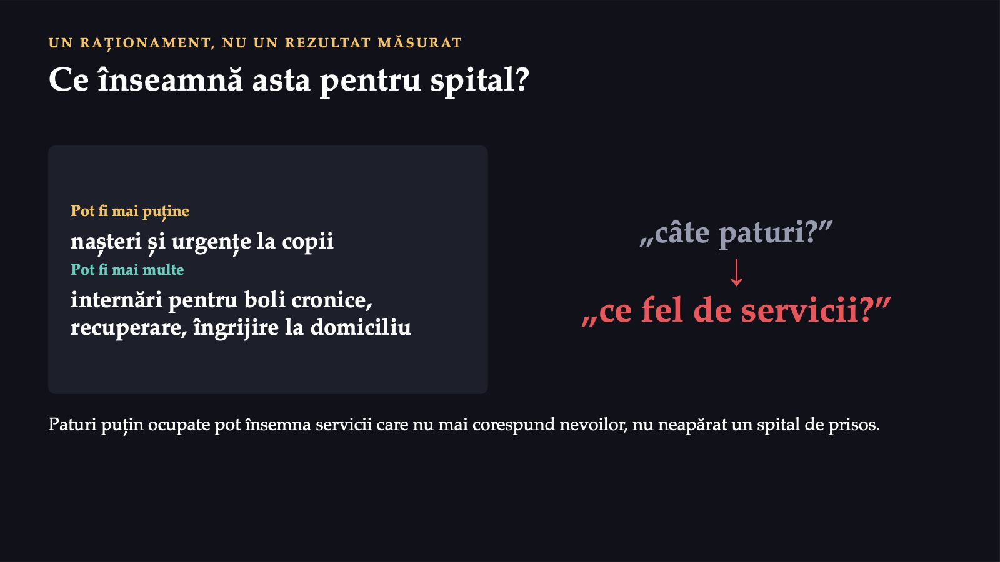
7 / 29Ce înseamnă asta pentru spital? Nu înseamnă automat mai puțini pacienți. Raționamentul următor nu este un rezultat măsurat, iar echipa îl verifică apoi în datele spitalului: mai puțini locuitori, dar mai vârstnici, pot însemna mai puține nașteri și mai puține urgențe la copii, dar mai multe internări pentru boli cronice, mai multă recuperare și mai multă nevoie de îngrijire la domiciliu. Un spital cu paturi puțin ocupate poate fi un spital ale cărui servicii nu mai corespund nevoilor celor din jur, nu neapărat unul de prisos. Datele populației nu decid nimic singure: ele mută întrebarea de la „câte paturi?” la „ce fel de servicii?”.
Județul nu este aria de servicii, iar seria are o ruptură
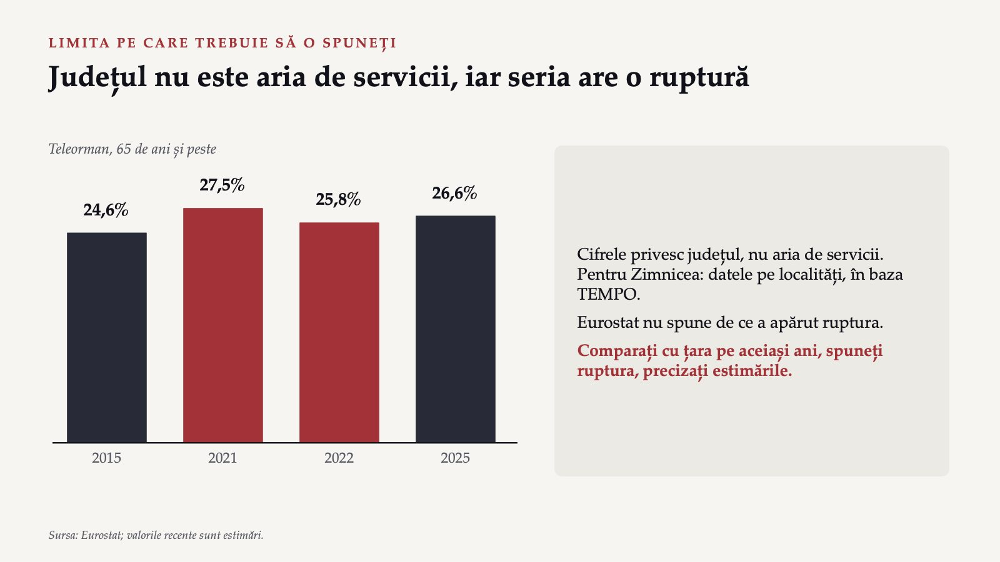
8 / 29Datele au și o limită pe care trebuie să o spuneți. Cifrele privesc tot județul, nu orașul Zimnicea și nici zona din care vin efectiv pacienții spitalului, adică aria lui de servicii. Pentru o concluzie despre Zimnicea, echipa ar căuta datele pe localități în baza TEMPO a Institutului Național de Statistică. Seria Eurostat are și ea o particularitate: ponderea vârstnicilor din Teleorman crește până în 2021, la 27,5%, scade brusc între 2021 și 2022, la 25,8%, apoi crește din nou, iar valorile din 2021 încoace sunt estimări. Fișierul Eurostat nu spune de ce a apărut ruptura, iar notele nu îi atribuie o cauză. De aceea, comparați județul cu țara pe aceiași ani, spuneți dacă seria are o ruptură și precizați că valorile recente sunt estimări.
Analiza PESTEL: o listă de verificare
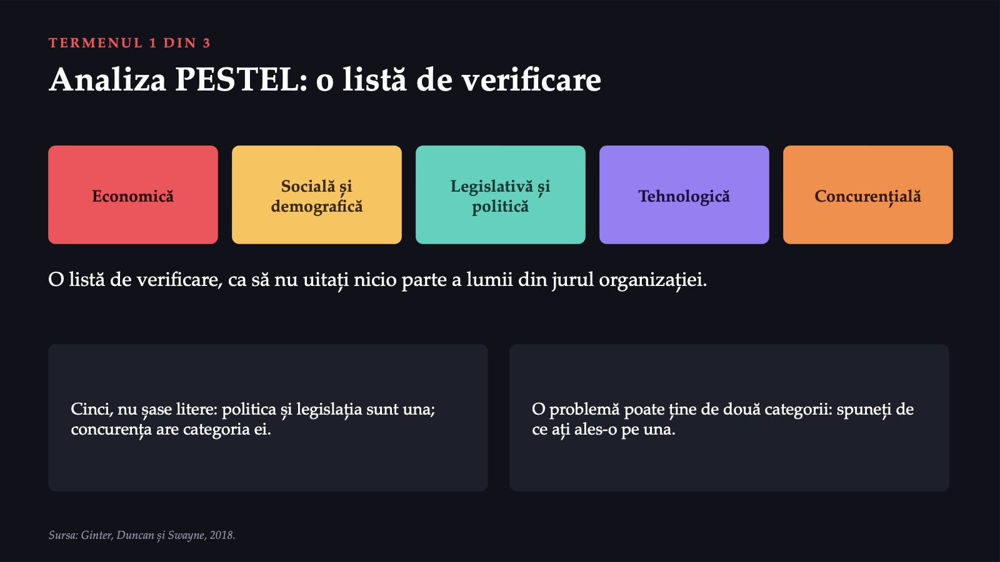
9 / 29Semnalul despre populație este o schimbare socială și demografică. Schimbările din jurul unei organizații se grupează în cinci categorii: economice, sociale și demografice, legislative și politice, tehnologice și concurențiale. Manualul le grupează în cinci categorii, nu în cele șase litere ale acronimului PESTEL: politica și legislația formează o singură categorie, iar concurența are o categorie proprie. Analiza PESTEL este trecerea sistematică a schimbărilor prin aceste categorii; în limbaj de zi cu zi, o listă de verificare, ca să nu uitați nicio parte a lumii din jurul organizației. Categoriile ajută, dar nu decid în locul vostru: problemele nu vin cu eticheta pusă. O problemă poate ține de două categorii; important este să știți de ce ați ales-o pe una dintre ele.
În ce categorie puneți fiecare semnal?
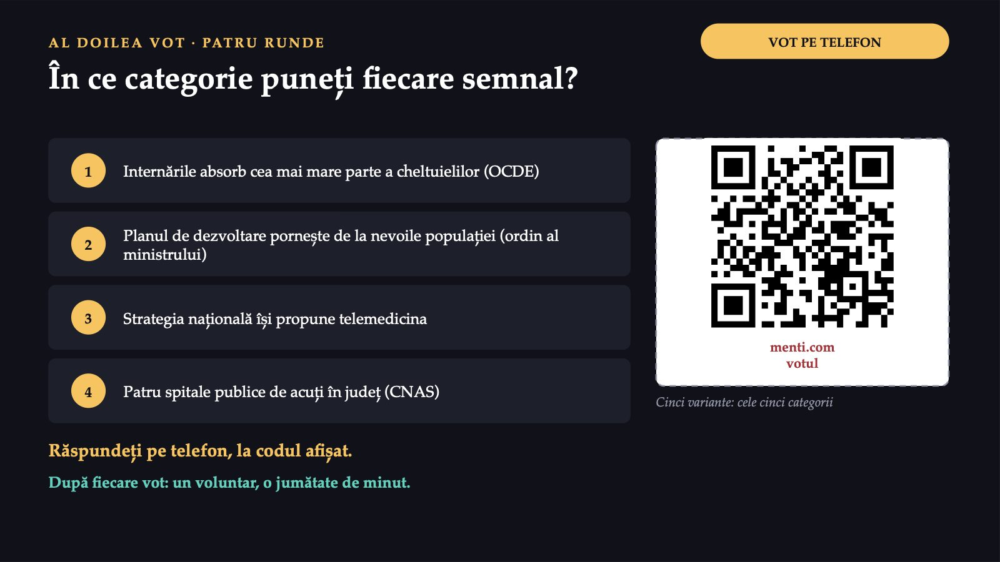
10 / 29Pe ecran apar, pe rând, patru semnale din jurul Spitalului Orășenesc Zimnicea, fiecare cu sursa lui. Pentru fiecare, votați pe telefon în ce categorie îl puneți: economică, socială și demografică, legislativă și politică, tehnologică sau concurențială. După fiecare vot, distribuția apare pe ecran, iar un voluntar spune în jumătate de minut de ce a ales categoria.
Răspunsul apare după ședință
Răspunsul apare după ședință
Răspunsul apare după ședință
Răspunsul apare după ședință
Răspunsul apare după ședință
Răspunsul apare după ședință
Răspunsul apare după ședință
Răspunsul apare după ședință
Răspunsul apare după ședință
Răspunsul apare după ședință
Fișa problemei externe: cinci elemente
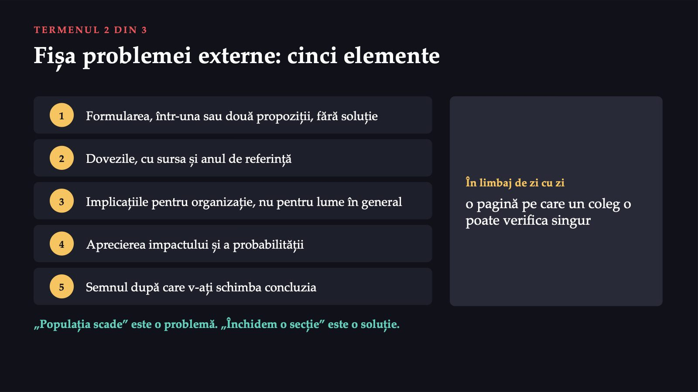
16 / 29Fișa problemei externe este fișa pe care echipa scrie o singură problemă din jurul organizației, în cinci elemente: formularea, într-una sau două propoziții, fără soluția inclusă; dovezile, cu sursa și anul de referință; implicațiile pentru organizație; aprecierea impactului și a probabilității; semnul după care echipa și-ar schimba concluzia. În limbaj de zi cu zi: o pagină pe care un coleg care nu a participat la discuție o poate citi și verifica singur. Formularea fără soluție împiedică echipa să sară la o decizie înainte de analiza internă: „populația județului scade și îmbătrânește” este o problemă; „spitalul trebuie să-și închidă o secție” este deja o soluție. Semnul după care v-ați schimba concluzia arată că știți că o analiză externă se sprijină pe presupuneri, care se verifică periodic.
Fișa problemei: populația din jurul spitalului
![EXEMPLU CU VALORI REALE Fișa problemei: populația din jurul spitalului Formularea Populația scade în fiecare an; vârstnicii, mult peste media țării, deși cresc mai încet. Dovezile 361 479 → 313 033 de locuitori; vârstnicii 24,6% → 26,6% (+2,0 puncte; țara: +3,3). Implicațiile Probabil mai mulți vârstnici cu boli cronice; serviciile pentru copii, dacă există, mai puțini pacienți. Aprecierea Impact mare; probabilitate mare. Semnul Localitățile nu urmează județul sau cazurile spitalului cresc. Sursa: Eurostat; valorile recente sunt estimări.](diapozitive/LP02/017.jpg) 17 / 29
17 / 29Iată fișa pentru Zimnicea. Formularea: populația județului Teleorman scade în fiecare an, iar ponderea vârstnicilor este mult mai mare decât media țării, deși a crescut mai încet decât ea. Dovezile: între 2015 și 2025, populația a scăzut în fiecare an, de la 361 479 la 313 033 de locuitori, cu 13,4% în total; ponderea persoanelor de 65 de ani și peste a crescut de la 24,6% la 26,6%, adică cu 2,0 puncte procentuale, iar în România cu 3,3 puncte. Implicațiile: spitalul are, probabil, mai mulți pacienți vârstnici, cu boli cronice; dacă are servicii pentru copii sau pentru nașteri, acestea pot avea tot mai puțini pacienți, iar ce servicii are efectiv spitalul se verifică în structura lui aprobată. Aprecierea: impact mare și probabilitate mare, pentru că populația scade în fiecare an al seriei, iar ponderea vârstnicilor, după ruptura dintre 2021 și 2022, crește din nou. Semnul: datele pe localități arată că orașul și comunele din jur nu urmează tendința județului, sau cazurile spitalului cresc. Observați ce nu conține fișa: nicio soluție, niciun „trebuie”.
Scrieți prima fișă a echipei
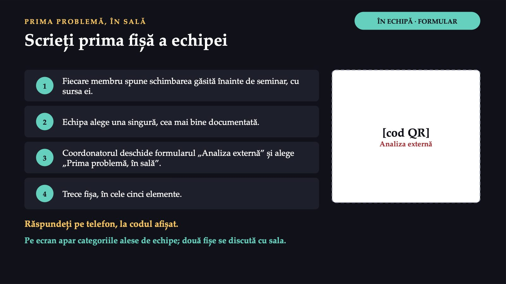
18 / 29Lucrați cu echipa voastră. Fiecare membru spune schimbarea pe care a găsit-o înainte de seminar, cu sursa ei. Echipa alege una singură, cea mai bine documentată, și scrie fișa ei în cele cinci elemente. Coordonatorul deschide pe telefon formularul „Analiza externă”, prin codul de pe ecran, alege varianta „Prima problemă, în sală” și trece fișa. Pe ecran apar, în timp real, categoriile alese de echipe. La final citim două fișe și le discutăm împreună: are formularea o soluție ascunsă? Se poate verifica dovada?
Trei greșeli fac o fișă greu de folosit
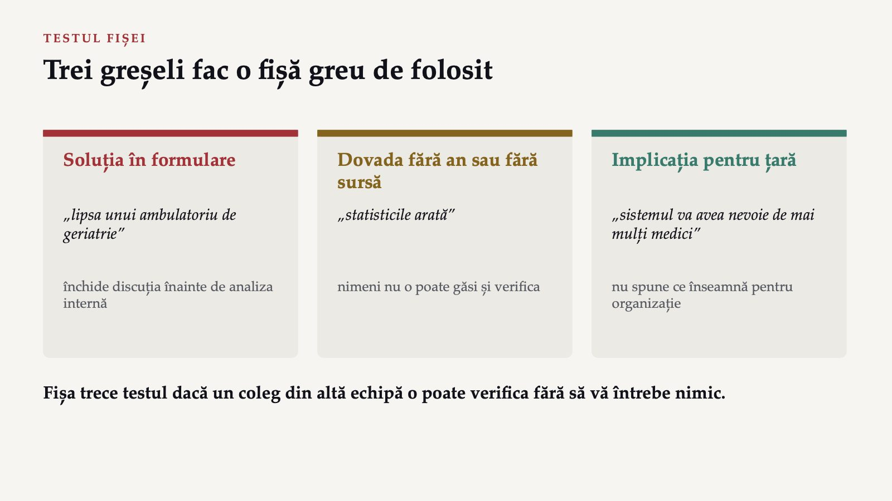
19 / 29Trei greșeli fac o fișă greu de folosit. Prima este formularea care conține soluția, de exemplu „lipsa unui ambulatoriu de geriatrie”, care închide discuția înainte de analiza internă. A doua este dovada fără an sau fără sursă găsibilă: „statisticile arată”. A treia este implicația scrisă pentru țară, nu pentru organizație: „sistemul va avea nevoie de mai mulți medici”. Fișa voastră trece testul dacă un coleg din altă echipă o poate verifica fără să vă întrebe nimic. Decizia vine mai târziu, după analiza internă și după alegerea direcției strategice.
Ce contează primul: impact × probabilitate
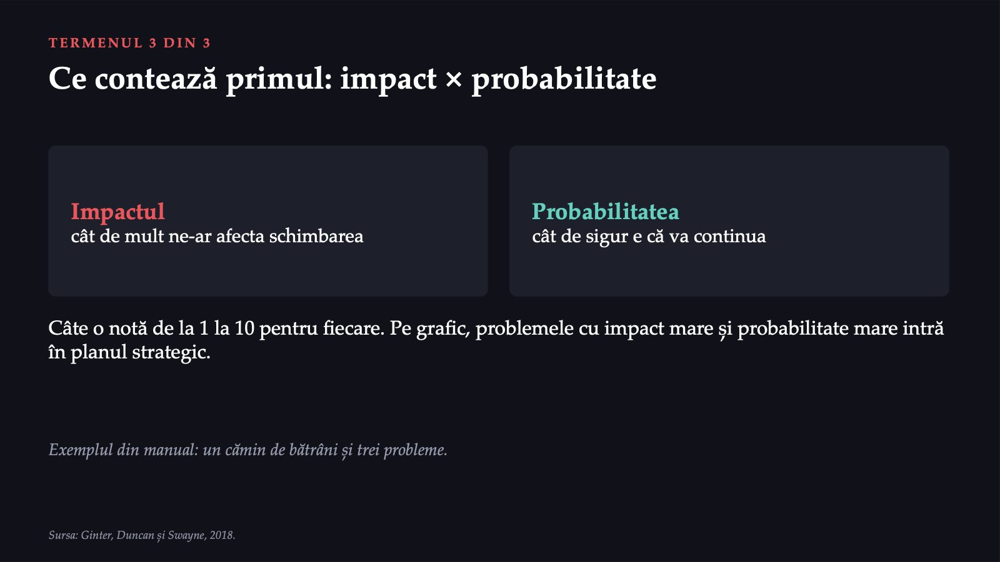
20 / 29Analiza externă găsește, de obicei, mai multe probleme decât poate trata un plan, așa că echipa trebuie să le ordoneze. Manualul descrie o metodă simplă și folosită pe scară largă: prioritizarea problemelor după impact și probabilitate. În disciplină o numim, pe scurt, „impact × probabilitate”. În limbaj de zi cu zi: cât de mult ne-ar afecta schimbarea și cât de sigur e că va continua. Pentru fiecare problemă, echipa dă o notă impactului și una probabilității, pe o scară de la 1 la 10, unde 10 înseamnă impact sau probabilitate mare. În exemplul din manual, un cămin de bătrâni își notează trei probleme din jur, fiecare cu dovezile ei și cu cele două note. Apoi problemele se așază pe un grafic, cu probabilitatea pe o axă și impactul pe cealaltă; cele din zona cu impact mare și probabilitate mare sunt critice și ar trebui tratate în planul strategic.
×
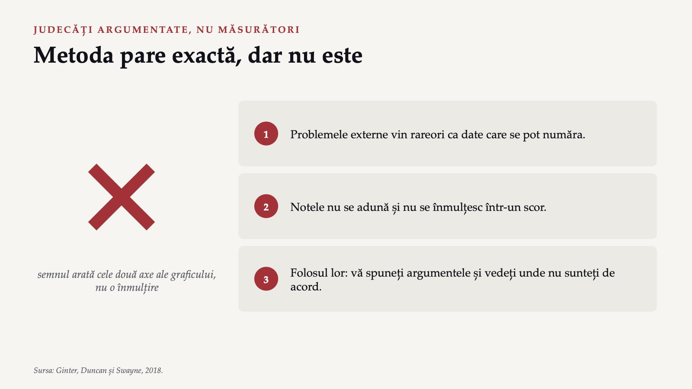
21 / 29Metoda pare exactă, dar nu este. Manualul atrage atenția că problemele externe vin rareori sub forma unor date care se pot număra: de cele mai multe ori, analiza înseamnă ca echipa să cadă de acord că problema există și cât contează și să aprecieze dacă ea va continua. Notele de la 1 la 10 sunt, așadar, judecăți argumentate, nu măsurători. Ele nu se adună și nu se înmulțesc într-un scor și nu țin locul datelor; semnul „×” din numele metodei arată cele două axe ale graficului, nu o înmulțire. Folosul lor este că vă obligă să vă spuneți argumentele și să vedeți unde nu sunteți de acord.
Ce notă dați impactului și probabilității?
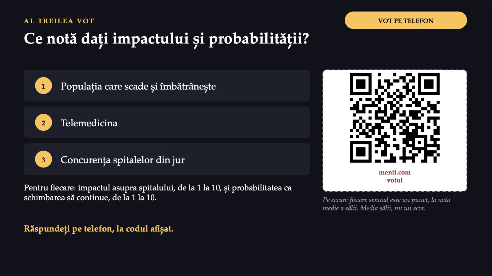
22 / 29Pentru trei dintre semnalele spitalului din Zimnicea, populația care scade și îmbătrânește, telemedicina și concurența spitalelor din jur, votați pe telefon două note de la 1 la 10: cât de mare este impactul asupra spitalului și cât de probabil este ca schimbarea să continue. Pe ecran apare graficul: fiecare semnal este un punct, la media voturilor voastre. Media arată doar unde vă aflați, nu este un scor al problemei.
Cum poate arăta graficul
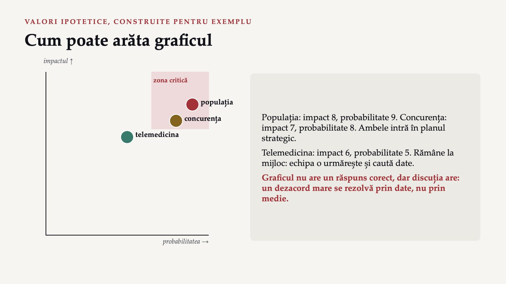
23 / 29Valori ipotetice. Să presupunem că sala a dat populației care scade și îmbătrânește impactul 8 și probabilitatea 9, concurenței spitalelor din jur impactul 7 și probabilitatea 8, iar telemedicinei impactul 6 și probabilitatea 5. Primele două probleme cad în zona cu impact mare și probabilitate mare și intră în planul strategic. Telemedicina rămâne la mijloc: echipa o urmărește și caută date înainte să decidă dacă o trece în plan. Graficul nu are o variantă bună stabilită dinainte, dar discuția contează. Dacă o parte din sală dă telemedicinei probabilitatea nouă și alta probabilitatea trei, diferența nu se rezolvă prin medie, ci prin date. Un dezacord mare este un semn că problema trebuie urmărită, nu că un grup a greșit.
Teleormanul s-a golit: județul a pierdut un sfert din locuitori în zece ani
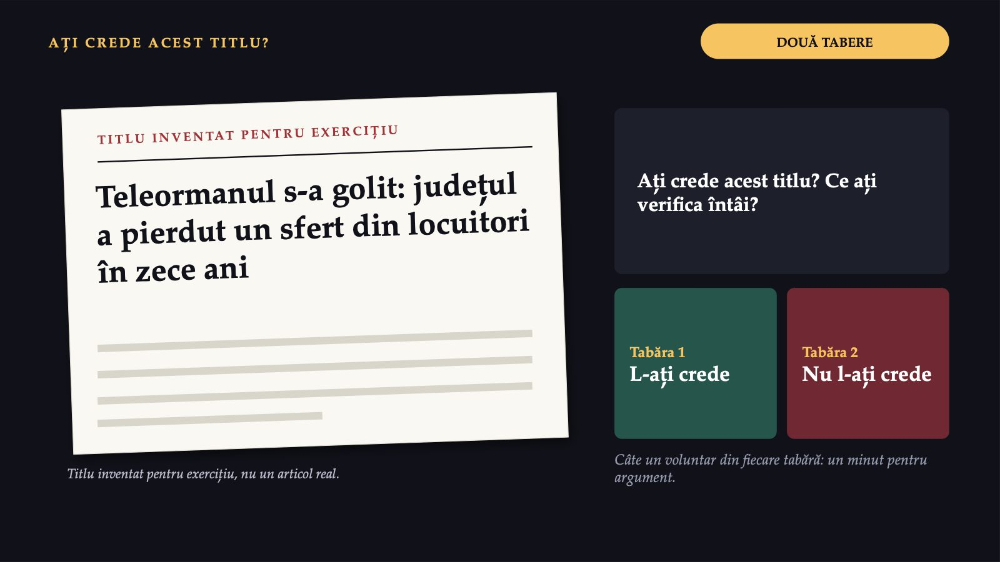
24 / 29Pe ecran este un titlu de ziar inventat pentru exercițiu, nu un articol real: „Teleormanul s-a golit: județul a pierdut un sfert din locuitori în zece ani”. Ați crede acest titlu? Sala se împarte în două tabere: cei care l-ar crede și cei care nu l-ar crede. Câte un voluntar din fiecare tabără își spune argumentul într-un minut.
Răspunsul apare după ședință
Răspunsul apare după ședință
Analiza externă a organizației voastre
![ORA ECHIPEI, ACASĂ Analiza externă a organizației voastre 1 Porniți de la fișa organizației. 2 Analiza PESTEL: un semnal pe categorie. 3 Trei fișe ale problemelor externe. 4 Note de impact și probabilitate, cu argument și orizont de timp. 5 Lista surselor; trimite coordonatorul. TERMENUL duminică 25.10.2026, ora 22:00 un formular pe echipă 0, 1 sau 2 puncte 2: cinci categorii acoperite, trei fișe complete, surse cu anul. 1: o categorie lipsă sau fișe incomplete. 0: nepredată sau fără surse. Obligatoriu: „Ce a făcut fiecare membru al echipei”.](diapozitive/LP02/026.jpg) 26 / 29
26 / 29Ora echipei produce al doilea capitol al planului strategic: analiza externă a organizației voastre. Porniți de la fișa organizației din primul seminar și de la răspunsul la întrebarea „ce informații lipsesc despre mediul extern”. Faceți analiza PESTEL: pentru fiecare categorie, cel puțin un semnal, cu stratul, sursa, anul de referință și adresa paginii; dacă într-o categorie nu găsiți nimic verificabil, scrieți asta și unde ați căutat. Alegeți cele trei semnale cele mai importante și scrieți pentru fiecare fișa problemei externe. Dați fiecăreia o notă pentru impact și una pentru probabilitate, de la 1 la 10, cu argumentul fiecărei note și cu orizontul de timp, împreună, ca echipă. Produsul se notează cu 0, 1 sau 2 puncte: 2 puncte pentru toate cele cinci categorii acoperite, fiecare cu un semnal sau cu căutarea documentată, trei fișe complete, note argumentate și surse cu anul de referință; 1 punct pentru o analiză predată la termen, dar cu o categorie neacoperită sau cu fișe incomplete; 0 puncte pentru o analiză nepredată sau fără surse. Coordonatorul trimite un singur formular pe echipă, varianta „Analiza externă completă”, cu câmpul obligatoriu „Ce a făcut fiecare membru al echipei”. Termenul: duminică 25.10.2026, ora 22:00.
Unde găsiți date publice
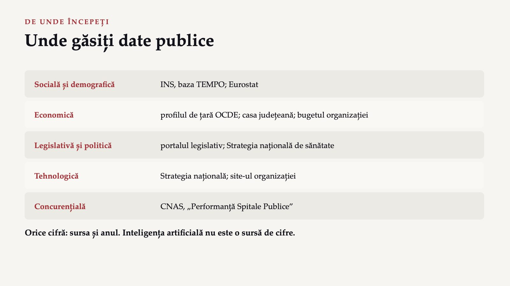
27 / 29Majoritatea semnalelor din jurul unei organizații de sănătate din România se pot verifica în câteva locuri. Institutul Național de Statistică publică, în baza TEMPO, serii despre populație și despre unitățile sanitare, multe pe județe și pe localități. Eurostat publică indicatorii de structură a populației, o parte și pe județe. Casa Națională de Asigurări de Sănătate publică, în aplicația „Performanță Spitale Publice”, indicatorii spitalelor publice. Profilul de țară al României descrie personalul, finanțarea și accesul la îngrijiri. Legile și ordinele se citesc în forma consolidată pe portalul legislativ al Ministerului Justiției, iar Strategia națională de sănătate arată direcțiile sistemului. Regula surselor rămâne aceeași: orice cifră poartă sursa și anul de referință, iar o cifră din presă se caută la sursa ei oficială. Un instrument de inteligență artificială nu este o sursă de cifre.
Ce luați cu voi
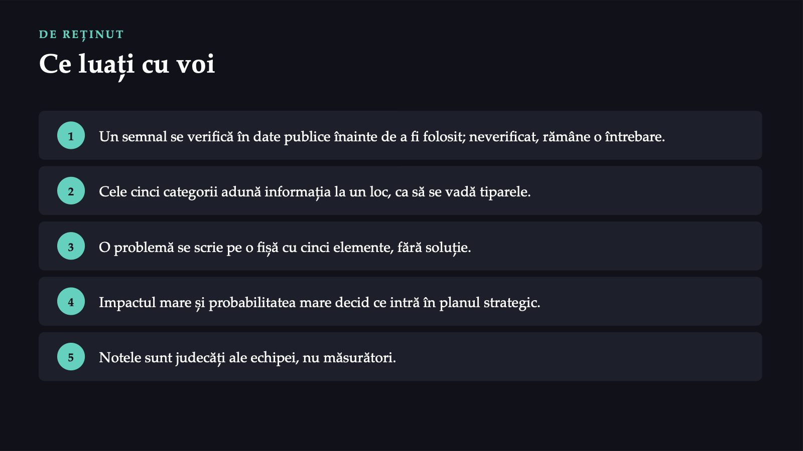
28 / 29Cinci lucruri de reținut. Analiza mediului extern pornește de la un semnal și îl verifică în date publice înainte de a-l folosi; un semnal neverificat rămâne o întrebare, nu o problemă a planului. Cele cinci categorii nu sunt un scop în sine: ele ajută echipa să adune informația la un loc și să vadă tiparele. O problemă externă se scrie pe o fișă cu cinci elemente. Problemele se ordonează după impact și după probabilitate; cele cu impact mare și probabilitate mare intră în planul strategic. Notele de impact și de probabilitate sunt judecăți ale echipei, nu măsurători.
Trei întrebări pentru final
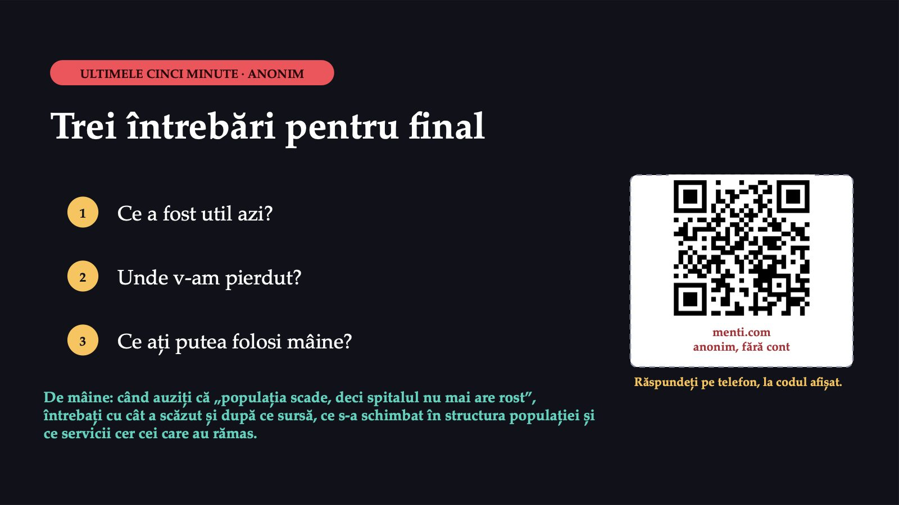
29 / 29Ultimele cinci minute sunt ale voastre: trei întrebări, anonim, pe Mentimeter, fără cont. Ce a fost util azi? Unde v-am pierdut? Ce ați putea folosi mâine? La începutul seminarului următor veți vedea două lucruri schimbate după răspunsurile voastre. De mâine, când auziți că „populația scade, deci spitalul nu mai are rost”, întrebați trei lucruri: cu cât a scăzut și după ce sursă, ce s-a schimbat în structura populației și ce servicii cer acum cei care au rămas.
Săgeți sau spațiu: navigare · O: vedere de ansamblu · N: notele prezentatorului · F: ecran complet · Esc: închidere